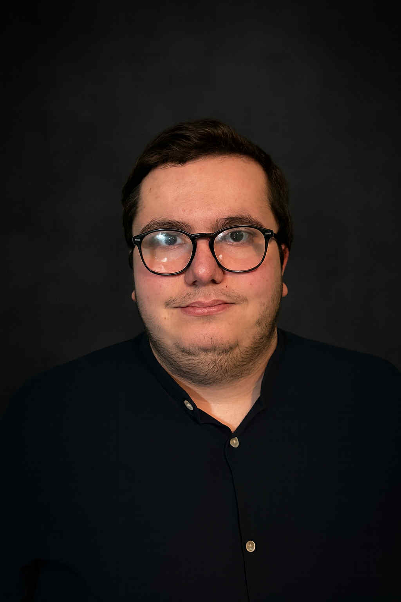

Le sens du service
Je cherche à faciliter le travail de l’équipe et à répondre aux demandes avec disponibilité, politesse et précision.
Je suis Rowan Rossetti, un profil administratif polyvalent basé à Liège, avec une sensibilité particulière pour les outils numériques et la qualité de l’accueil.

Mon parcours a commencé dans le domaine administratif et de l’accueil. J’y ai découvert l’importance d’une information bien organisée, d’un contact professionnel et d’un soutien discret mais essentiel au fonctionnement quotidien d’une structure.
J’ai ensuite développé des compétences en gestion de très petites entreprises. Cette expérience m’a appris à jongler avec plusieurs responsabilités : commandes, caisse, stocks, relation client, préparation et livraison. Elle a renforcé mon autonomie et ma capacité à rester efficace dans un environnement rythmé.
Ma formation en développement web front-end complète aujourd’hui ce profil. Elle m’a apporté davantage de logique, de créativité et de maîtrise des outils numériques. Je peux ainsi aborder l’administration avec un regard moderne et une vraie facilité d’adaptation.
Je cherche à faciliter le travail de l’équipe et à répondre aux demandes avec disponibilité, politesse et précision.
Je comprends l’importance de la confidentialité et du respect des informations traitées dans un contexte administratif.
J’apprends rapidement, je m’adapte aux outils et je garde une attitude constructive face aux changements.
Je prends le temps de relire, de contrôler et de présenter des documents propres, cohérents et faciles à utiliser.
Je recherche une fonction d’assistant administratif, d’agent d’accueil ou de secrétaire dans laquelle mon organisation et mon aisance numérique seront utiles au quotidien.
Je souhaite continuer à progresser, gagner en responsabilités et contribuer à une ambiance de travail professionnelle et respectueuse.
Me contacter →